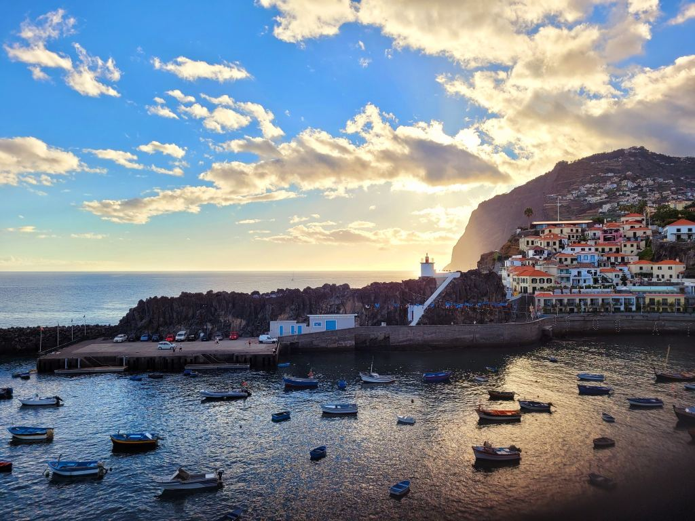
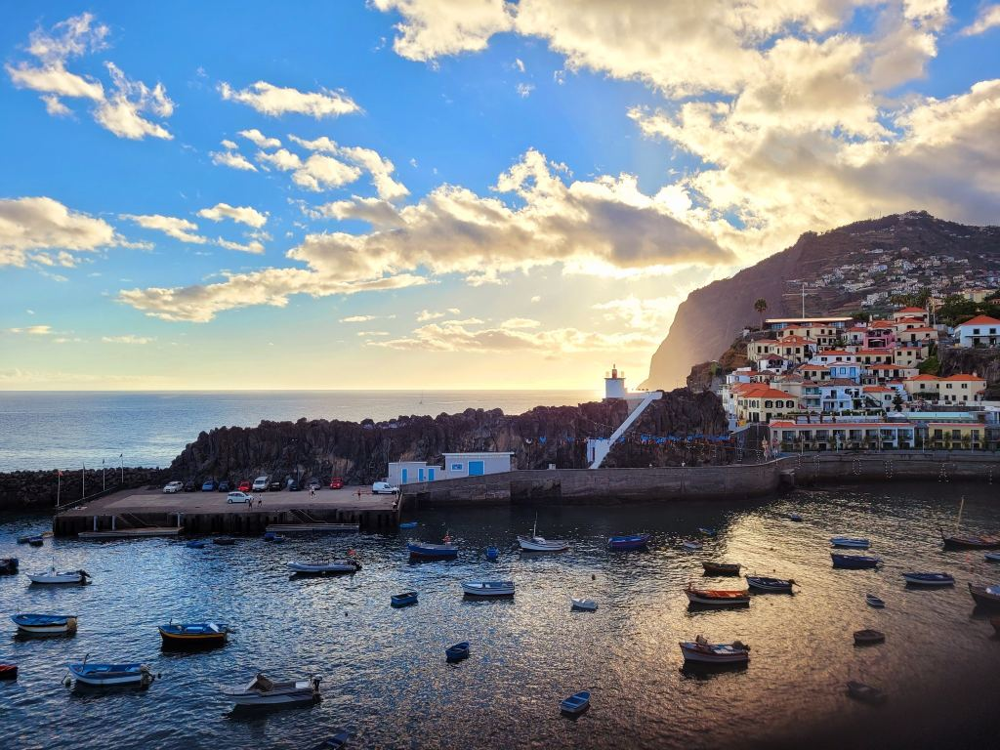
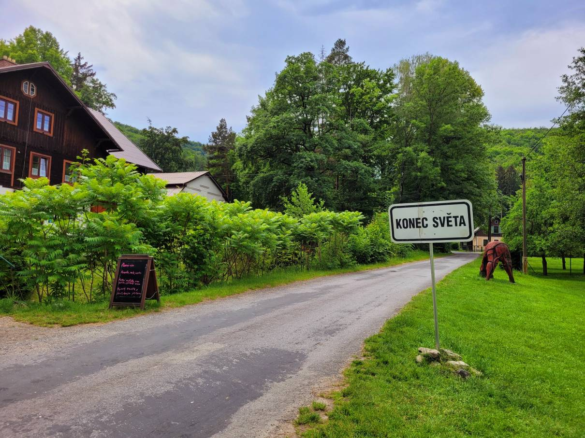
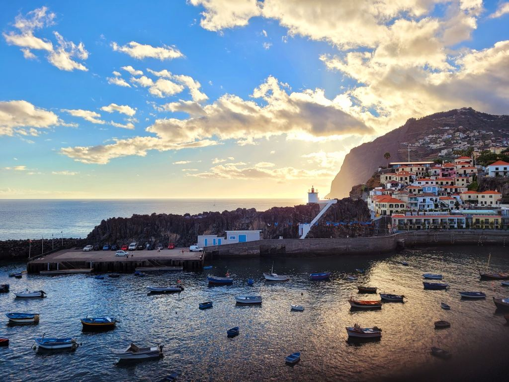

Fotogalerie
Ve fotogalerii je aspoň zlomek z množství fotografií z Madeiry, ale samotný zážitek žádná fotografie nedokáže popsat.
 

Jmenuji se Veronika a cestování je jedním z mých koníčků. Podle časových možností cestuji, kam se dá. Ráda objevuji českou krajinu i zahraničí, vždyť poznávání je součástí našich životů! Cestování mi rozšiřuje obzory, vidím život jiných kultur a jejich hodnoty. Specifická atmosféra míst je zážitek, který vám nikdo nevezme. Stačí i jednodenní výlet po České republice a objevíte místní zajímavosti, užijete si den podle sebe a odpočinete si od všednosti. Zahraniční výlety jsou další kapitolou a pokud se nebojíte, otevřou se vám nové světy.
Velmi ráda chodím pěšky, takže v cíli cesty se obvykle pohybuji v rámci pěších tras a hromadnou dopravou. Ráda poznávám místní obyvatele z jiného úhlu, než ve vyumělkovaných turistických atrakcích a kulisách letovisek. Zkuste to a uvidíte rozdíl a opravdový zážitek!
Poslední putování jsem plánovala půl roku dopředu. Ostrov Madeira se v posledních letech stal častým cílem turistů, převážně Čechů. Strávila jsem na tomto úžasném ostrově 14 dní v srpnu, z toho 7 dní jsem šla pěšky z východu na západ. Tento ostrov je známý svou nádhernou přírodou, výhledy a ideálním počasím pro turistiku. Na zádech jsem nesla vše, co jsem potřebovala. Dalo mi to svobodu a pocit nezávislosti. Odnesla jsem si s sebou nezapomenutelné zážitky, které přinesly uvědomění, radost a pocit volnosti.
Ve fotogalerii je aspoň zlomek z množství fotografií z Madeiry, ale samotný zážitek žádná fotografie nedokáže popsat.

Kromě putování po Madeiře jsem navštívila v minulých letech například Mallorku, některé zajímavosti Německa, Dánska, Anglie a Nizozemska. Před několika lety jsem strávila 14 dní v Jihoafrické republice. U nás je také stále co objevovat. Navštívila jsem třeba Krkonoše, Jeseníky, Jizerské hory, Adršpach, České Švýcarsko a Šumavu.
Kromě cestování mě baví fotografování, šití, vaření, čtení knih a kreslení. Je toho spoustu, ale na vše mi nezbývá čas. Ráda se učím nové věci a doufám, že se mezi mé koníčky brzy dostane i další tvorba, třeba webových stránek.